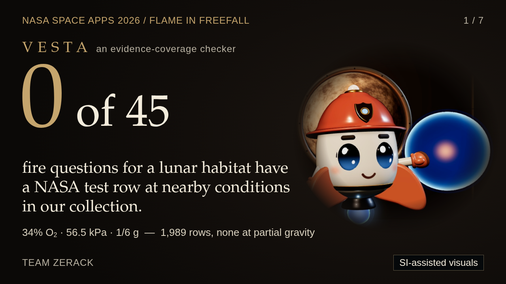
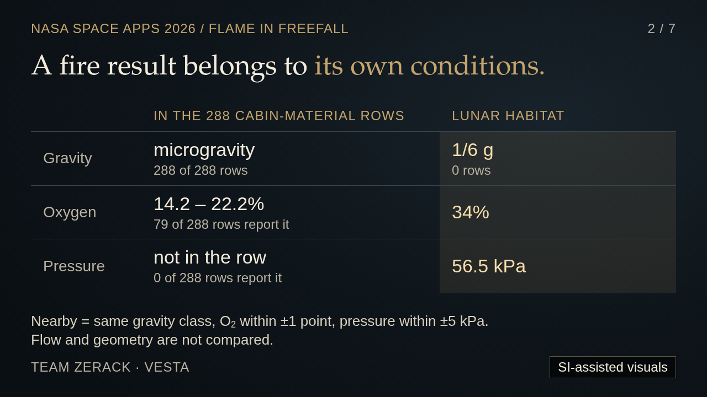
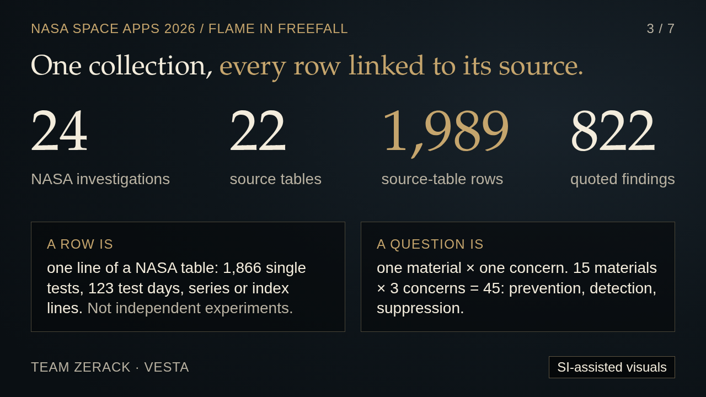

NASA Space Apps 2026 / Flame in Freefall. VESTA, an evidence-coverage checker. 0 of 45 fire questions for a lunar habitat have a NASA test row at nearby conditions in our collection. 34% O2 · 56.5 kPa · 1/6 g — 1,989 rows, none at partial gravity. Team Zerack. SI-assisted visuals.
Speaker notes and sources — 0 of 45 lunar-habitat fire questions have a NASA test row at nearby conditions
Our finding first. Take NASA’s exploration atmosphere for a lunar habitat: 34 percent oxygen, 56.5 kilopascals, one-sixth g. Ask 45 fire questions, 15 materials times prevention, detection and suppression. In the collection we assembled, none has a NASA test row at nearby conditions: 24 have rows or findings recorded under other conditions and 21 have no source in this collection. All 1,989 source-table rows are microgravity or carry no gravity value; none is partial gravity. VESTA is the tool that makes that count inspectable. The mascot is an illustration.
Sources

NASA Space Apps 2026 / Flame in Freefall. A fire result belongs to its own conditions. In the 288 cabin-material rows: gravity is microgravity in 288 of 288 rows; oxygen is 14.2 – 22.2% (79 of 288 rows report it); pressure is not in the row (0 of 288 rows report it). Lunar habitat: 1/6 g (0 rows), 34% oxygen, 56.5 kPa. Nearby = same gravity class, O2 within ±1 point, pressure within ±5 kPa. Flow and geometry are not compared. Team Zerack..
Speaker notes and sources — A fire result belongs to its own conditions
Why a result does not transfer between cabins. This table counts the 288 rows on our 15 cabin materials. All 288 were recorded in microgravity, 79 report oxygen, between 14.2 and 22.2 percent, and none reports a pressure. Across the whole collection, 1,981 of the 1,989 rows are microgravity and the other eight are index lines with no gravity value; rows on other fuels, such as droplets and gases, do report other oxygen levels and pressures. The lunar habitat is 34 percent, 56.5 kilopascals and one-sixth g. VESTA calls a row nearby only when gravity class matches, oxygen is within one percentage point and pressure within five kilopascals; a pressure assumed from the facility counts for that match and is labelled. Flow, geometry, thickness and ignition are not compared.
Sources

NASA Space Apps 2026 / Flame in Freefall. One collection, every row linked to its source. 24 NASA investigations, 22 source tables, 1,989 source-table rows, 822 quoted findings. A row is one line of a NASA table: 1,866 single tests, 123 test days, series or index lines. Not independent experiments. A question is one material × one concern. 15 materials × 3 concerns = 45: prevention, detection, suppression. Team Zerack..
Speaker notes and sources — One collection, every row linked to its source
The collection: 24 NASA Physical Sciences Informatics investigations, 22 source tables, 1,989 source-table rows and 822 findings quoted from NASA documents. Twenty of the investigations contribute table rows; the other four contribute findings only. A row is one line of a NASA table: 1,866 are single tests and 123 are test days, series, sessions, group references or dataset index lines, so rows are not independent experiments. A question is one material and one concern; 15 indexed materials times prevention, detection and suppression gives 45.
Sources

NASA Space Apps 2026 / Flame in Freefall. Change only gravity: questions with a nearby row go 3 → 0. Held fixed: 21% O2 · 101.4 kPa · same 45 questions. All 1,981 rows with a gravity value are microgravity: the lunar 0 is a data gap, and it stays 0 at 1×, 2× and 4× tolerance. 0 g: 3 nearby, 21 other conditions, 21 no source in this collection. 1/6 g: 0 nearby, 24 other conditions, 21 no source in this collection. Team Zerack..
Speaker notes and sources — Change only gravity: questions with a nearby row go 3 to 0
One condition changed. Hold the station atmosphere, 21 percent oxygen and 101.4 kilopascals, and the same 45 questions. In microgravity, three questions have nearby rows, 21 have evidence under other conditions and 21 have no source in this collection. Switch only gravity to one-sixth g: nearby goes to zero, other conditions to 24, no source stays at 21. The zero is not a discovery about lunar fire; it is a gap in the data. All 1,981 rows that carry a gravity value are microgravity and the other eight rows carry none, so no tolerance on oxygen or pressure can reach a partial-gravity cabin: the lunar habitat count is zero at one, two and four times the shipped tolerance. This is a count of evidence coverage, not a measurement of fire behavior.
Sources
![Slide 5: One real NASA row: the pressure is not in the table. Cropped app capture of row PSI-25:1, BASS-II: fuel PMMA, oxygen 22.2% O2, oxygen basis ambient, pressure not in the table (outlined), gravity microgravity, airflow not in the table, and the line: Pressure is not reported in the table. The facility-based inference is 14.7 psia (101.3 kPa). PMMA film, 22.2% O2, microgravity. Pressure: not in the table; 101.3 kPa assumed from a NASA facility guide, and labelled so. Station case (slide 4): all 24 nearby row matches behind those 3 questions rest on that assumption.](vesta-slide-5.png)
NASA Space Apps 2026 / Flame in Freefall. One real NASA row: the pressure is not in the table. Row PSI-25:1, BASS-II: PMMA film · 22.2% O2 · microgravity. Pressure: not in the table. 101.3 kPa assumed from a NASA facility guide, and labelled so. Station case (slide 4): all 24 nearby row matches behind those 3 questions rest on that assumption. Team Zerack..
Speaker notes and sources — One real NASA row: the pressure is not in the table
One real record. BASS-II row PSI-25:1 is a 100-micrometre PMMA film at 22.2 percent oxygen in microgravity. Its table has no pressure column. VESTA shows 101.3 kilopascals as an assumption taken from NASA’s Researcher’s Guide to Combustion Science, which describes the glovebox as nominally one atmosphere, and quotes that sentence. The three station questions with nearby evidence rest on 24 row matches, PMMA 16, SIBAL 6 and Nomex 2, and all 24 depend on that same assumed pressure; none reports it in the row.
Sources
![Slide 6: The action: one test campaign moves 23 of 45. Rows at the lunar cabin's conditions (1/6 g, 34% O2, 56.5 kPa) for the 15 materials. Two bars on one scale. Today: 0 nearby, 23 with rows at other conditions, 22 that need a first source. After: 23 nearby, 22 that need a first source. A request list for reviewers: not a test protocol, not a predicted result. In the app, a person approves it and a virtual robot stages the review kit. Cropped app capture of the simulated robot. Simulation: no hardware, sensors or autonomy.](vesta-slide-6.png)
NASA Space Apps 2026 / Flame in Freefall. The action: one test campaign moves 23 of 45. Rows at the lunar cabin's conditions (1/6 g · 34% O2 · 56.5 kPa) for the 15 materials. Today: 0 questions with a nearby row, 23 with rows at other conditions, 22 that need a first source. After: 23 with a nearby row, 22 that need a first source. A request list for reviewers: not a test protocol, not a predicted result. In the app, a person approves it and a virtual robot stages the review kit. Simulation: no hardware, sensors or autonomy. Team Zerack..
Speaker notes and sources — The action: one test campaign moves 23 of 45
How the gap becomes a request. For the lunar habitat, 23 of the 45 questions already have source rows for that material and concern, only at other conditions; the other 22 have no source row at all, 21 with no source in this collection and one with a quoted finding but no table row. So one test campaign that recorded rows at the cabin’s own conditions, one-sixth g, 34 percent oxygen and 56.5 kilopascals, for the 15 indexed materials would give a nearby row to 23 questions, and 22 would still need a first source. This is counted with the same matching rules; it names conditions and materials, not a test protocol, and it predicts no result. A nearby row is evidence coverage only. In the app a person approves the request and a virtual robot stages a review kit; that part is a simulation with no hardware, sensors or autonomy.
Sources
![Slide 7: FLEX droplets: less oxygen, more extinction. 274 tests from one NASA table: how many ended in extinction, by ambient O2. Liquid droplets in microgravity, not cabin materials. Four bars: 18% or less 103/115; 18 to 22% 63/91; 22 to 30% 20/59; over 30% 0/9. Held-out check: 179/224 for the oxygen + fuel model against 150/224 for the majority baseline; 224 dated tests, each test day held out in turn. A check on this table, not a cabin prediction. itzjk.github.io/vesta and github.com/itzjk/vesta.](vesta-slide-7.png)
NASA Space Apps 2026 / Flame in Freefall. FLEX droplets: less oxygen, more extinction. 274 tests from one NASA table: how many ended in extinction, by ambient O2. Liquid droplets in microgravity, not cabin materials. 18% or less: 103/115. 18 – 22%: 63/91. 22 – 30%: 20/59. Over 30%: 0/9. Held-out check: 179/224 oxygen + fuel model, 150/224 majority baseline. 224 dated tests, each test day held out in turn. A check on this table, not a cabin prediction. itzjk.github.io/vesta · github.com/itzjk/vesta. Team Zerack..
Speaker notes and sources — FLEX droplets: less oxygen, more extinction
Where the collection is dense, it does show a pattern. In the FLEX droplet table, 274 tests record how the burn ended. Grouped by ambient oxygen in bands fixed beforehand, extinction was recorded in 103 of 115 tests at 18 percent or less, 63 of 91 from 18 to 22, 20 of 59 from 22 to 30 and 0 of 9 above 30. A small logistic model on oxygen and recorded fuel, checked by holding out each test day in turn, gets 179 of the 224 dated tests right against 150 of 224 for the majority baseline; 50 tests have no usable date and are left out of that check. The scope is liquid fuel droplets in microgravity from one NASA table: not cabin materials and not a prediction for any cabin. Rows are table rows, not independent experiments. Every count recomputes from the public data with the open code, and the website calls no AI model at runtime.
Sources